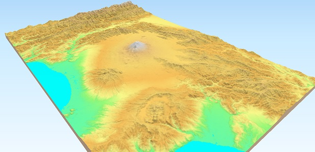

Qgis2threejs Plugin Document¶
Qgis2threejs plugin is a QGIS plugin, which visualizes DEM data and vector data in 3D on a web view. You can build various kinds of 3D objects and generate files for web publishing in simple procedure. In addition, you can save the 3D model in glTF format for 3DCG or 3D printing.
Table Of Contents: